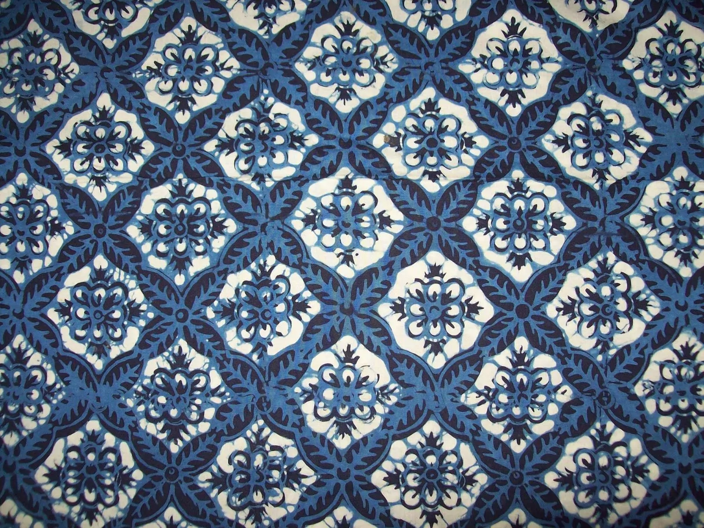
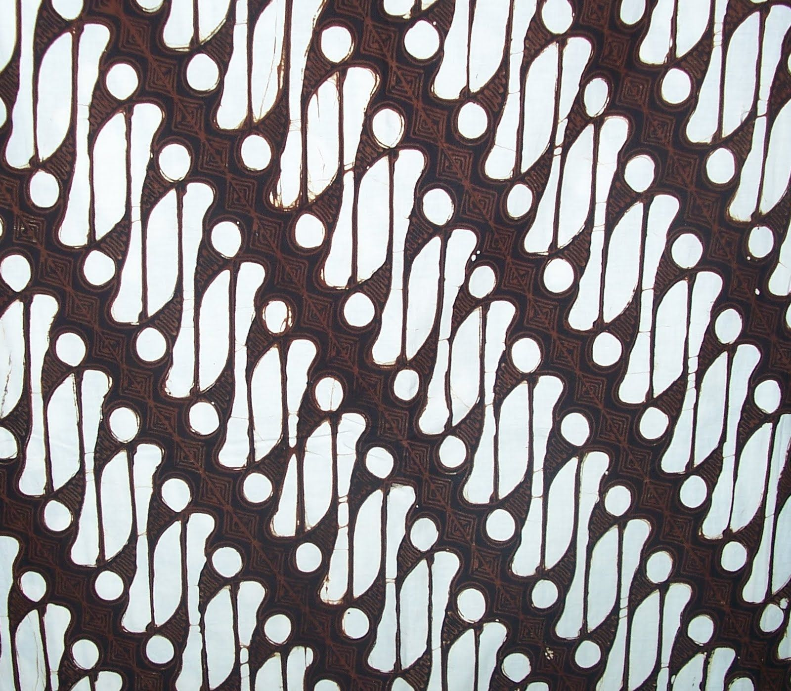
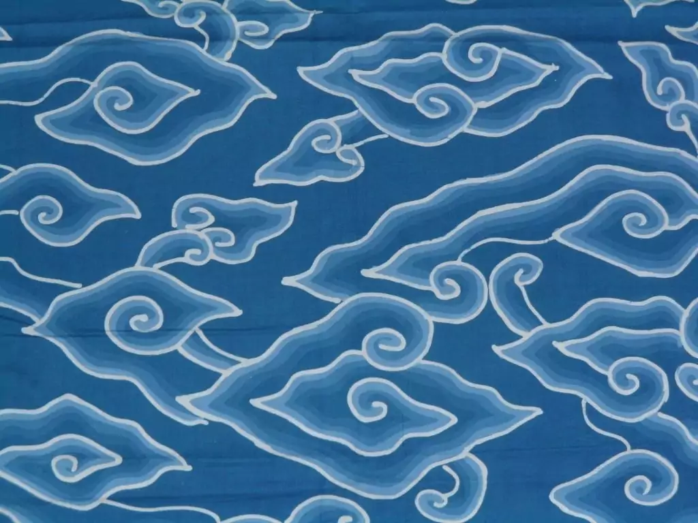
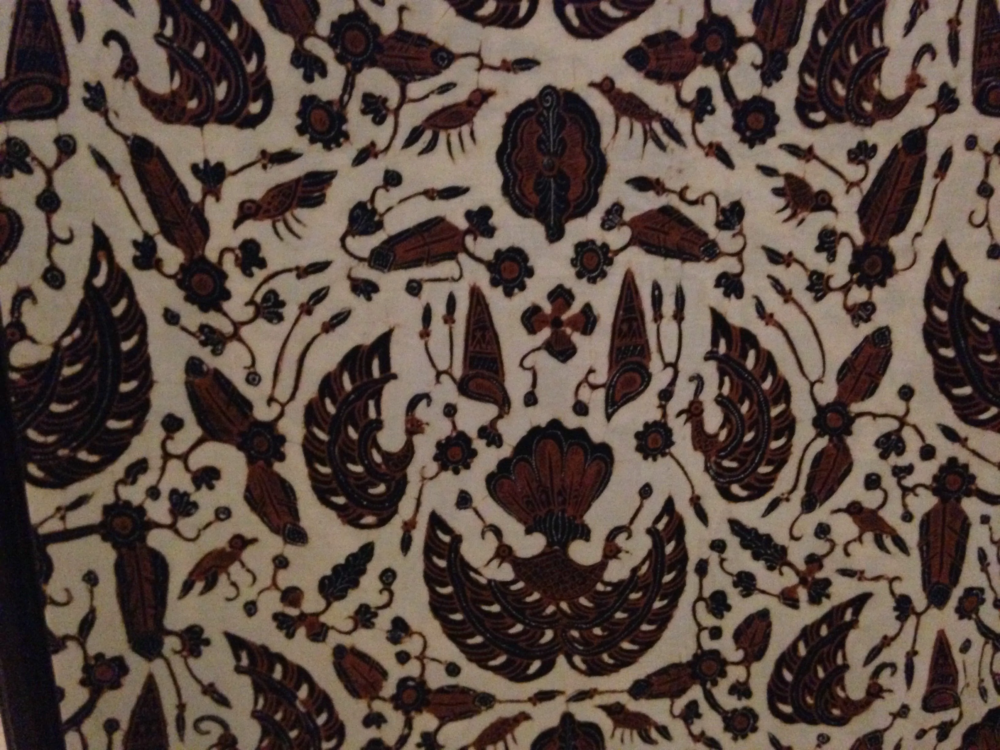
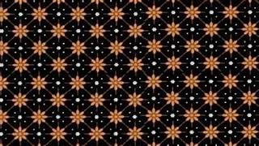
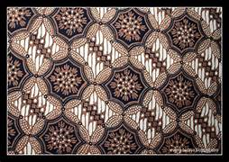
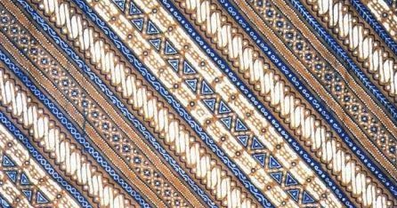
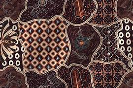
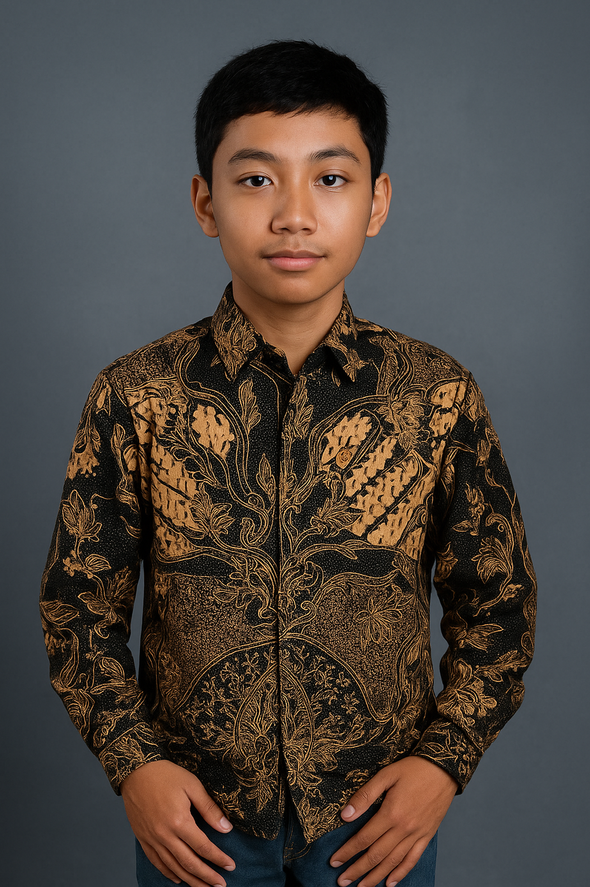

Secara etimologi, istilah batik berasal dari bahasa Jawa, yaitu ambatik. Amba artinya kain yang lebar, sedangkan kata titik atau matik dalam bahasa Jawa merupakan kata kerja yang artinya membuat titik. Jadi disimpulkan, batik adalah titik-titik yang digambar pada media kain yang lebar sehingga menghasilkan pola-pola yang indah

Motif berbentuk irisan buah kawung/kolang-kaling, melambangkan kesucian dan pengendalian diri.
Motif klasik keraton

Motif bergelombang menyerupai huruf “S”, melambangkan kesinambungan dan semangat pantang menyerah.
Motif larangan keraton

Motif khas Cirebon dengan pola awan berlapis tujuh, melambangkan kesabaran dan keteduhan.
Asal: Cirebon

Motif khas Solo, sering digunakan dalam upacara pernikahan dan adat, melambangkan doa untuk kemakmuran.
Asal: Surakarta

Motif bintang kecil berulang, diciptakan sebagai simbol cinta abadi dan kasih sayang tulus.
Diciptakan permaisuri Sunan Pakubuwono III

Motif geometris berbentuk bunga atau bintang, melambangkan keteraturan dan keselarasan hidup.
Motif klasik Jawa

Motif diagonal mirip garis lereng gunung, melambangkan keteguhan dan keberanian.
Motif sederhana tapi kuat

Motif indah menyerupai peta, melambangkan keragaman dan keindahan dunia.
Motif populer Jawa
